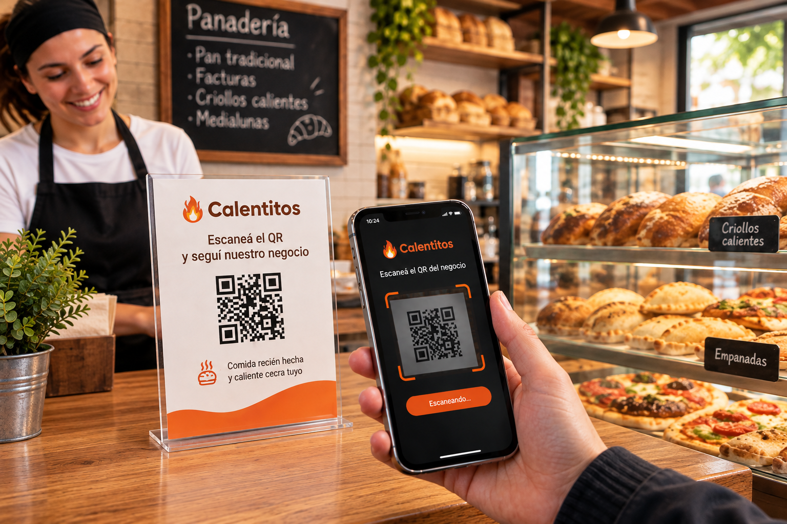

Calentitos – Enterate cuando sale comida recién hecha cerca tuyo
¿Viste un QR de Calentitos en un negocio? Usá la cámara de tu teléfono para escanearlo.

Escaneá el QR del negocio
El código identifica automáticamente el negocio y Calentitos te lleva al lugar correcto.
Entrá a Calentitos
¿Usás Android?
Descubrí comida recién hecha, seguí tus lugares favoritos y enterate cuando haya algo calentito cerca tuyo.
¿Usás iPhone?
Instalá la web app de Calentitos en tu pantalla de inicio y recibí notificaciones cuando tus comercios publiquen.
¿Preferís usar la Web?
Activá las notificaciones en tu navegador y recibí avisos cuando tus comercios favoritos publiquen.
¿Qué es Calentitos?
Calentitos conecta comercios locales con personas que quieren enterarse cuando algo recién hecho está listo para disfrutar.
Porque hay comidas que tienen un momento especial: cuando salen del horno, de la cocina o de la parrilla. Calentitos te ayuda a saber cuándo llegó ese momento.
¿Alguna vez llegaste demasiado temprano?
Tal vez pasaste por la panadería y todavía no habían salido los criollos. O llegaste a la rotisería antes de que estuvieran listas las empanadas. O simplemente no sabías cuándo iba a salir la próxima tanda.
Muchas veces no es que no quieras comprar algo recién hecho: simplemente no sabés cuándo va a estar listo.
Calentitos busca solucionar justamente eso.
🔥 Seguí cada tanda en vivo
Los comercios pueden indicar el estado de sus productos para que sepas aproximadamente cuándo estarán disponibles.
- Preparando: falta aproximadamente 30 minutos.
- Últimos minutos: falta aproximadamente 15 minutos.
- Listo: ya está disponible.
Porque no es lo mismo saber que hoy habrá criollos que saber que acaban de salir del horno.
¿Cómo funciona?
📍 1. Encontrá tus comercios
Descubrí negocios participantes cerca tuyo o escaneá el código QR de un comercio para acceder directamente a su perfil.
❤️ 2. Seguí tus lugares favoritos
Elegí las panaderías, cafeterías, rotiserías, parrillas y otros comercios que querés tener siempre a mano.
🔔 3. Recibí el aviso
Cuando un comercio que seguís publica una nueva tanda, Calentitos puede avisarte directamente en tu celular.
🥐 Desde criollos hasta comida recién hecha
Cada comercio decide qué publicar. Podés encontrar desde productos recién salidos del horno hasta comidas preparadas en el momento.
- Panaderías: criollos, pan, facturas, medialunas y otros productos recién horneados.
- Cafeterías: medialunas, churros, tostados y otras opciones recién preparadas.
- Rotiserías y casas de comida: empanadas, tartas, pizzas, milanesas, pastas y platos del día.
- Parrillas y asadores: asado, choripán y otros productos recién salidos de la parrilla.
- Comida tradicional: locro, humita, empanadas y otros platos típicos cuando están recién hechos.
¿No está tu lugar favorito?
Contale a tu panadería, cafetería, rotisería o parrilla de confianza sobre Calentitos y pediles que se sumen.
Así vas a poder seguir ese comercio y enterarte cuando publique una nueva tanda.
🏪 ¿Tenés un comercio?
Avisá cuando salga lo recién hecho.
Tus clientes no tienen que adivinar cuándo estará lista la próxima tanda. Cuando algo sale del horno, de la cocina o de la parrilla, publicalo desde Calentitos y avisales a las personas que siguen tu negocio.
Publicar una nueva tanda lleva unos pocos segundos y puede hacerse desde el celular, una tablet o el navegador web.
- Un toque: publicá una nueva tanda rápidamente.
- Un aviso: informá a las personas que siguen tu comercio.
- En el momento: tus clientes pueden enterarse cuando el producto está recién hecho.
- Tu propio perfil: compartí tu comercio mediante su código QR.
Contactanos para conocer cómo empezar a publicar tus productos y avisar a tus clientes cuando estén recién hechos.
🔥 Una idea simple
Si hay criollos calientes, pan recién horneado, facturas recién salidas o comida recién hecha cerca tuyo, deberías ser el primero en enterarte.
Eso es Calentitos.
Descargar Calentitos